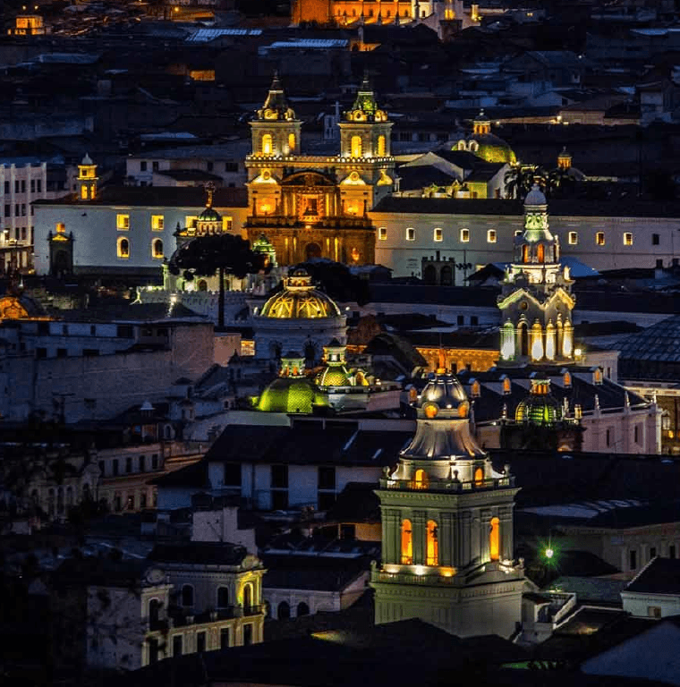
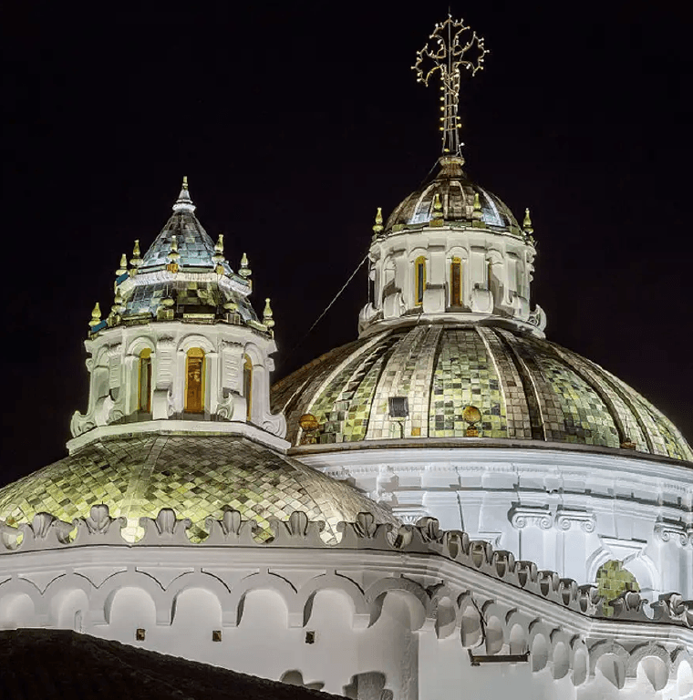
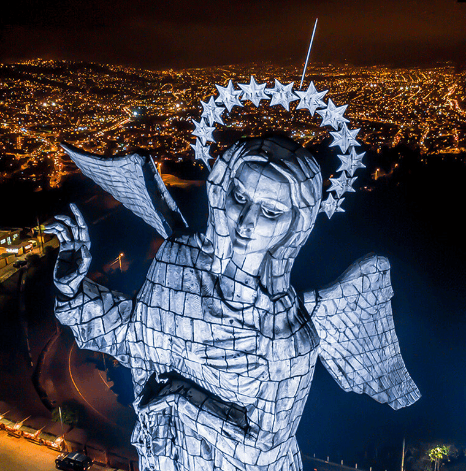
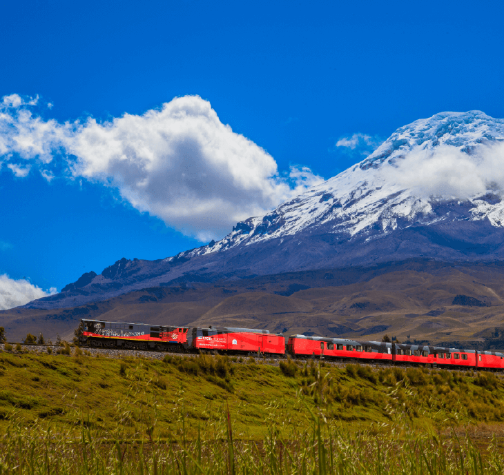

Planifica tu viaje
¿Cuál es tu próximo destino?
Explore nuestras últimas historias

UN VALIOSO TRANSPORTE
El ferrocarril vuelve a recorrer Imbabura
Ago 26, 2024 • Lectura: 6 min
La rehabilitación del ferrocarril en Imbabura se convirtió en una realidad. Desde agosto de 2024, las estaciones y la línea férrea fueron refaccionadas, gracias a iniciativas locales públicas y privadas.